Eclipse Maven 插件安装
来源：原创 发布时间：2015-04-07 归档：maven
环境 ：
JDK 7
Maven 3
Eclipse Luna
离线插件
到文章最后下载 eclipse-maven-plugin.zip 离线安装包。解压缩到任意目录 ：
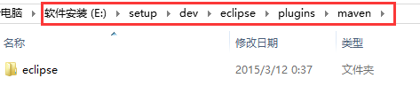
以下用 %maven-plugin% 表示解压缩根目录。如这里的 E:/setup/dev/eclipse/plugins/maven
安装插件
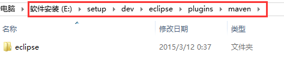
以下用 %maven-plugin% 表示解压缩根目录。如这里的 E:/setup/dev/eclipse/plugins/maven
在 eclipse 安装目录新建一个 links 文件夹。
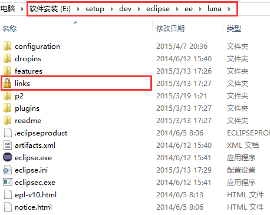
在 links 文件夹内新建一个文本文件, 并重命名为 maven.link。用文本编辑器打开 maven.link 并编辑它 ：
在当前目录下, 找到 eclipse.ini 配置文件, 用文本编辑器打开并编辑它 ：
eclipse 配置
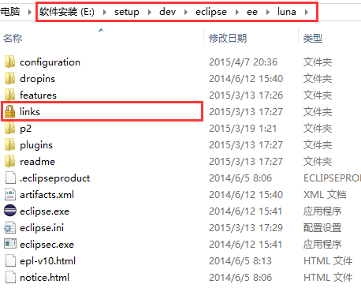
在 links 文件夹内新建一个文本文件, 并重命名为 maven.link。用文本编辑器打开 maven.link 并编辑它 ：
path=E:/setup/dev/eclipse/plugins/mavenpath 的值指定到 %maven-plugin%, 保存并关闭。
在当前目录下, 找到 eclipse.ini 配置文件, 用文本编辑器打开并编辑它 ：
--launcher.XXMaxPermSize 256m --launcher.defaultAction openFile -vm E:/setup/dev/java/jdk/bin/javaw.exe -vmargs -Dosgi.requiredJavaVersion=1.6增加第 5 和第 6 行配置, 将 E:/setup/dev/java/jdk 替换成你本机 jdk 的安装目录即可。保存并关闭。
打开 eclipse ( 若 eclipse 已经启动, 重启它 ), Window --> Preferences
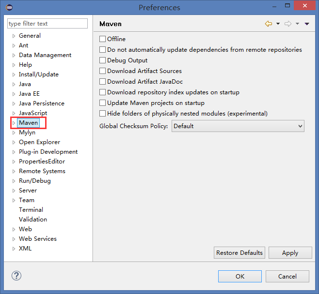
若能看到 Maven 选项卡, 说明插件安装成功。
Window --> Preferences -- > Maven --> Installations --> Add...
弹出的对话框如下
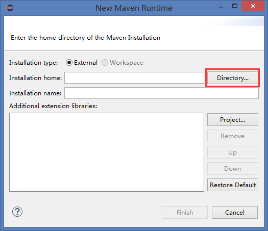
点击 Directory... 按钮, 在弹出来对话框中选到你 maven 安装的根路径
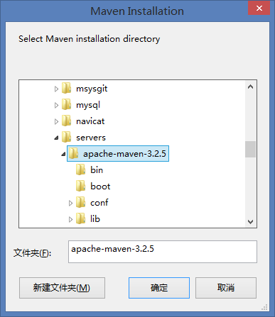
确定, Finish。
Window --> Preferences -- > Maven --> User Settings --> Browse...
在弹出来对话框中选到你 maven 安装路径下的 conf/settings.xml 文件
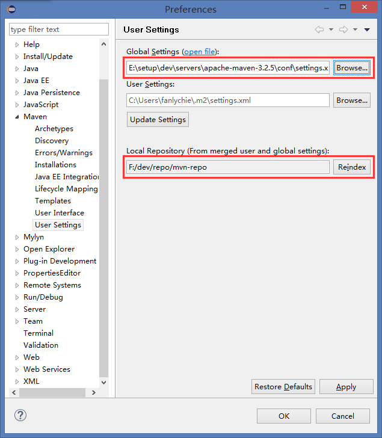
点击 OK, 至此, eclipse maven 插件安装配置完成。
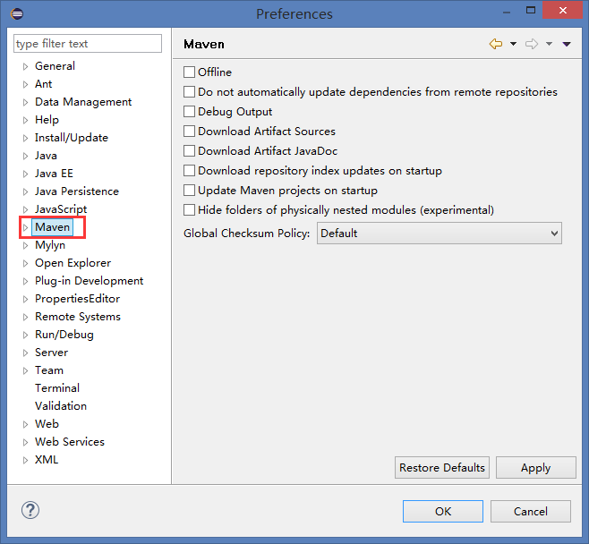
若能看到 Maven 选项卡, 说明插件安装成功。
Window --> Preferences -- > Maven --> Installations --> Add...
弹出的对话框如下
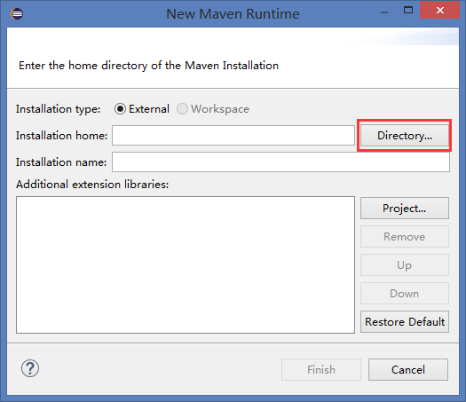
点击 Directory... 按钮, 在弹出来对话框中选到你 maven 安装的根路径
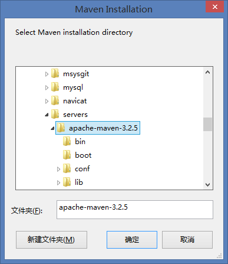
确定, Finish。
Window --> Preferences -- > Maven --> User Settings --> Browse...
在弹出来对话框中选到你 maven 安装路径下的 conf/settings.xml 文件
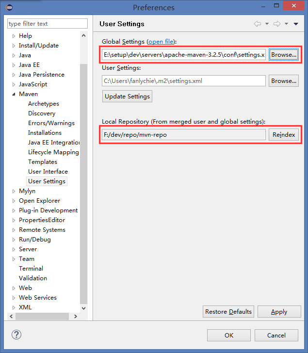
点击 OK, 至此, eclipse maven 插件安装配置完成。
插件下载